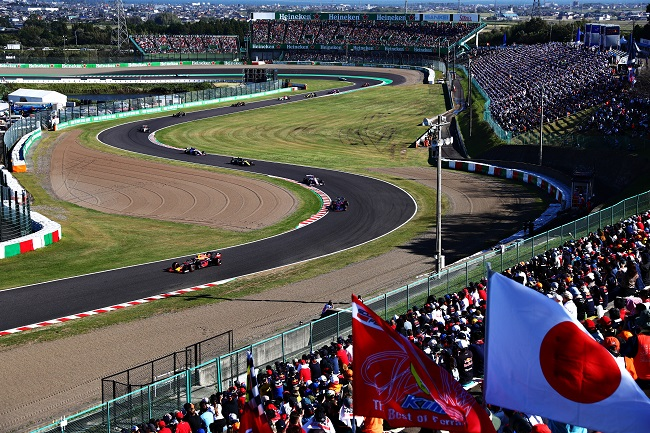
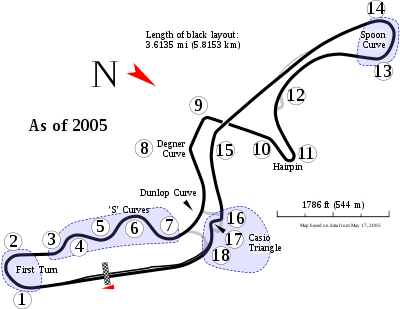

NAVEGUE
Home
Pilotos
Calendário/Tabela
Grand Prix
Construtoras
Últimas Notícias
GP do Japão
SOBRE
O Suzuka International Racing Course é uma pista de corrida localizada em Suzuka, Japão. É uma das pistas mais desafiadoras e emocionantes da Fórmula 1, conhecida por suas curvas técnicas e mudanças de elevação. A pista tem uma extensão de 5,807 km e é composta por 18 curvas, incluindo a famosa "Esses de Suzuka", que é uma sequência de curvas em "S" que testa a habilidade dos pilotos. A pista foi inaugurada em 1962 e tem sido um local importante para corridas de carros desde então. A corrida anual de Fórmula 1 em Suzuka é uma das mais populares do calendário, com fãs japoneses apaixonados e entusiasmados criando uma atmosfera única e vibrante durante todo o fim de semana de corrida. A pista também é conhecida por ser um teste físico e mental para os pilotos, com suas curvas rápidas e mudanças de elevação exigindo habilidade e coragem.
Circuitos Utilizados
Suzuka

INFORMAÇÕES DA CORRIDA

Localização
Suzuka, Japão
Voltas
53
Percurso
5.807 km
Total
307.471 km
Curvas
18
Pole
Lewis Hamilton
Anos Disputados
47
Última Disputa
2022
Maior vencedor
Michael Schumacher
Última Corrida - Pódio
Max Verstappen